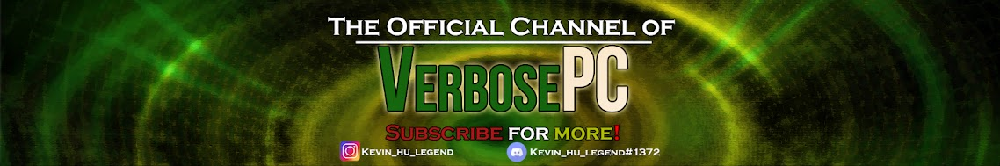

Here are the projects relating to video production. I've used industry-standard tools such as Adobe Premiere Pro, After Effects, Photoshop, Illustrator, Audition and Davinci Resolve to create animation, visual effects and music videos. I've built 2 YouTube channels for viewers around the world and I also produce videos for work and academics.
Verbose the talking cat is a YouTube channel that creates comedic stickman animation videos that amasses 20,000 subscribers and 7 million overall views. The content of the channel includes stickman animation; the protagonist of a youth that is relatable to many young viewers who plays video games but encounter various challenges such as school, parents, and friends. The channel was discontinued after I decided I want to study at university with high course load.
I've worked in Fleetwood International Church as a production assistant and I'm in charge of filming and producing videos using Davinci Resolve. The major projects include a Thank You Video, where I filmed and edited a video of many interns to express the gratitude towards the BC government for funding the internship program. I also researched the viability of using video announcements which needed motion graphic animations. In the end, I created a Proof of Concept video showcasing the potential of using video announcements.
Thank you video: https://vimeo.com/919850087
Video Announcements Proof of Concept: drive.google.com

Verbose Tech is a tutorial channel that makes tutorials about stickman animation, video editing and other tech-related topics. The channel was discontinued in 2018 to focus on Verbose the Talking Cat. In 2020, this channel was used as a backup channel for Verbose the Talking Cat. In the future, this channel could be used for tech tutorials and projects regarding selfhosting, networking and homelab.